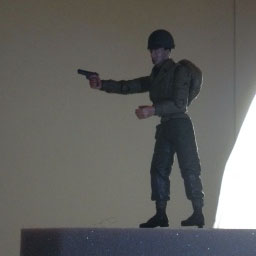
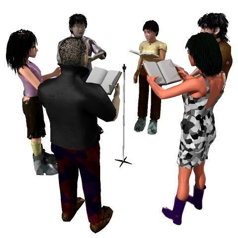
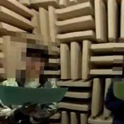
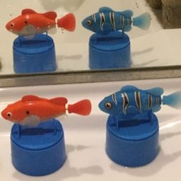

Introduction to
the Full-Spherical Stereo
technology
3-D panoramic sound can be transmitted
in the stereo audio format
Introduction
In the conventional stereo sound system, only one-dimensional spatial information of sounds along with the left-to-right axis can be transmitted. To transmit two-dimensional or three-dimensional spatial information, special audio formats such as 'Dolby surround' and 'Ambisonics' are needed.
By using the Full-Spherical Stereo technology, 3-dimensional spatial sound can be saved to and transmitted by the simple stereo audio format. Transmitting immersive spatial sounds, therefore, does not need any special data format at all. Only in the recording process, a 4-track recording system is required.
In principle, a 4-point measurement is required to capture spatial characteristics of waves in the 3-dimensional space.
A tetrahedral microphone system consists of 4 omnidirectional microphones (Fig. 1) can be used to capture spatial properties of sounds in the 3-dimensional space.
Here, the spatial properties of sounds mean the propagation direction and propagation speed of a wave for each frequency bin at the observation point. For more detail about the propagation direction and propagation speed, see Technical note.

Fig.1 Tetrahedral microphone system
Four omnidirectional microphones (Audio Technica, AT9903) are at the vertices of a tetrahedron.
Each side of the tetrahedron is 15 mm long.
In our technology, a 4-track audio signal captured by the system is converted to a 2-channel audio data stream without losing the 3-dimensional spatial properties of the sounds.
Please wear stereo headphones and check the demonstration by clicking the thumbnail below. Stereo headphones are necessary. Once an image appears on the screen and you see "Click to start" or "Tap to start" on the screen, you can start the reproduction by a click or tap on the image. You can pause and resume the playback by clicking (tapping) the image.
During the reproduction, you can change panning of the full spherical image by moving the mouse pointer to the left or right on the image and you will notice that panning of the sound also changes. You can also control tilt (elevation from the horizontal plane) by the vertical motion of the mouse.

Demo with a file "orimoto0.wav"
(Pan and tilt are available)
Playback of full spherical images on this site is implemented thanks to Three.js technology.
In the clip below, you can control 'roll' (rotation around the front-to-rear axis) by placing the mouse pointer at the corners of the image.

Demo with a file "fss00.wav"
(Pan and roll are available)
The sound files used in the clips above are "orimoto0.wav" and "fss00.wav." As the file extension indicates, they are stereo WAV files. If only one-dimensional spatial property is conveyed in a WAV file, neither of yaw (pan), pitch (tilt) and roll of the sound can be changed.
Although there are only 2 channels in a stereo WAV file, in the Full-Spherical Stereo technology, a stereo WAV file can contain the full spherical (3-dimensional) spatial information of sounds.
Some other clips are available.
 Demo with a file "lost_species.wav" |
Demo with a file "orimoto1.wav" |
 Demo with a file "haunted_sniper.wav" |
Features
Besides the interactive control of yaw, pitch and roll, this technology offers several unique features.
[Panoramic beamformer]
Since the full spherical spatial characteristics of sounds are contained in the stereo audio data stream, a directional beam can be formed programatically during the playback by using the spatial information.
In the next demo clip, 6 speakers who surround the microphone system are reading 6 different texts at the same time as can be seen in Fig. 2.

Fig.2 Six readers and the microphone system
Three males and 3 females are reading 6 different texts in an anechoic room.
There is a tetrahedral microphone system in the center of the room.
In this demonstration, you can toggle the beam patterns by using the 'BEAMFORMER' button on the bottom of the demo screen. There are 4 beam patterns that are 'OMNIDIRECTIONAL,' 'CARDIOID,' 'NARROW,' and 'SUPER NARROW.' Since direction of the beam is linked to the panning direction, you can direct the beam to any direction you want.
Open the clip by clicking the thumbnail below.
Demo with a file "recit6.wav"
(Thanks to Tokyo City University students)
As you may notice, a directional beam can be formed from a stereo audio data stream and directed to any desired direction. This feature is called by us 'Panoramic beamformer.'
[Underwater panoramic sound]
As described, full spherical spatial sounds can be captured by a 4-point recording. If these microphones used in the recording are replaced by hydrophones, panoramic sounds can be recorded even in the water, too.
Since the sound speed is much faster in water than in air, it has to be adjusted programmatically. Other than that, panoramic sound in water can be recorded and reproduced by almost the same procedure as that in air. Figure 3 shows the tetrahiedral hydrophone system used in our study.

Fig.3 Tetrahedral hydrophone system
An underwater panoramic sound recording system consists of 4 omnidirectional hydrophones
(AQUARIAN AUDIO H2a-XLR). Each side of the tetrahedron is 50 mm long.
Sounds in the following demo clips were recorded in the water by using the tetrahedral hydrophone system. In these clips, the full spherical spatial sounds are reconstructed also from the data stream stored in stereo WAV files.
|
Demo with a file "turtle01.wav" |
 Demo with a file "squal.wav" |
[Backward compatibility]
To reproduce the full spherical spatial sound, a custom app or program is needed. On this site, for instance, a program in JavaScript is used. Since stereo WAV files in the Full-Spherical Stereo are backward compatible, even if the custom app is not available, audio data stream can be played as the conventional one-dimensional stereo sound.
Navigation

Copyright© 2024 Doshisha Univ.